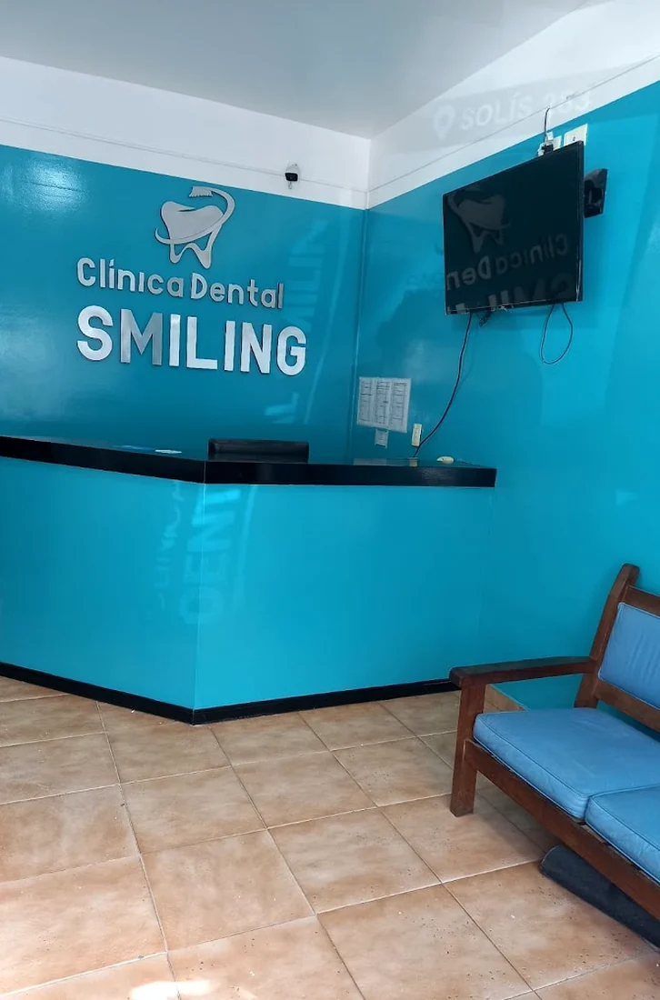
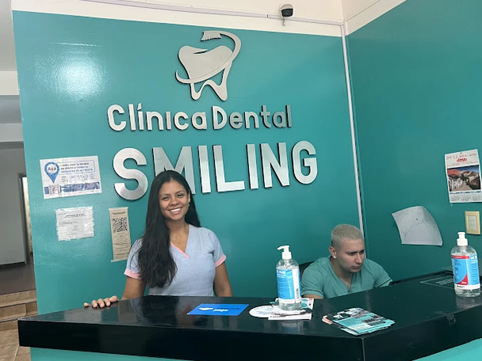
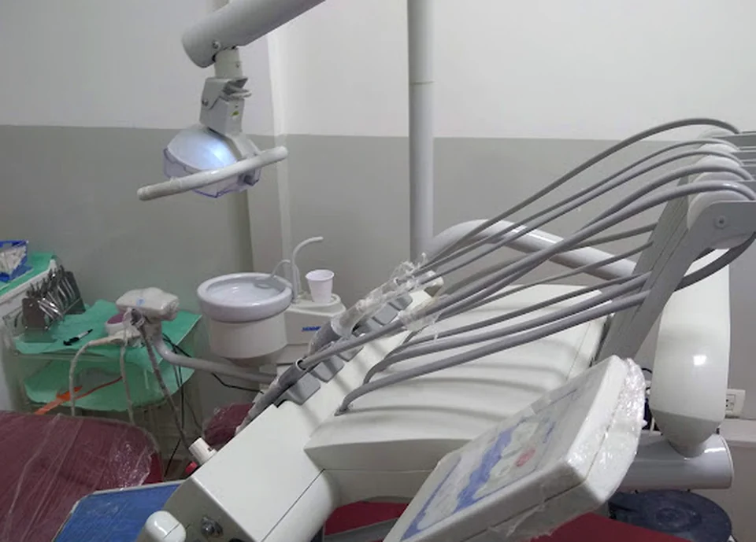
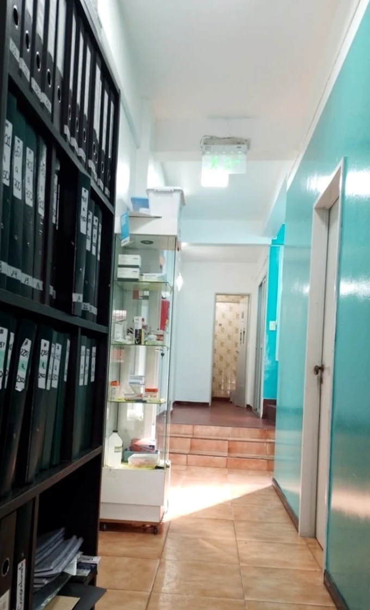

Recepción
Identidad visual sólida y entorno ordenado
Clínica Dental Smiling presenta una propuesta visual sobria, actual y funcional para comunicar atención odontológica, implantes, ortodoncia, radiología dental y contacto ágil en Solís 283, CABA.


Imagen cálida y cercana para reforzar confianza.
CTA visibles, navegación limpia y microinteracciones suaves.
La sección prioriza las prestaciones visibles en la información compartida: odontología general, implantología, ortodoncia, endodoncia, rehabilitación oral y radiología dental.
Consultas, evaluación integral, seguimiento clínico y tratamientos de base con una presentación clara y profesional.
Comunicación enfocada en seguridad, rehabilitación funcional y resultado estético, sin caer en mensajes agresivos.
Servicio presentado con un lenguaje accesible para nuevos pacientes y una estructura que ayuda a entender la propuesta.
Se incorpora como parte de una oferta integral para comunicar amplitud clínica sin saturar la navegación.
Ideal para reforzar el perfil resolutivo de la clínica y mejorar la percepción de valor del sitio.
Se muestra como apoyo diagnóstico, aportando una imagen más completa y técnicamente sólida del consultorio.
El sitio se reorganizó para enfatizar los elementos que mejor convierten en negocios locales de salud: claridad, prueba social, contacto rápido, información concreta y fotografías que ayuden a ubicar y reconocer el lugar.


El hero combina ubicación, reputación visible y vías de contacto para generar confianza inmediata.
Las tarjetas de servicios ordenan la información clínica sin exigir demasiado scroll mental al usuario.
Los CTA y el formulario convierten la intención en mensaje o llamada con el menor número posible de fricciones.
Hacé clic en cualquier imagen para verla en grande.
Se muestran como resumen de comentarios públicos, priorizando claridad y tono profesional.
“Se destaca la atención amable desde el primer contacto y una experiencia más ordenada durante la consulta.”
Resumen de reseñas públicas“Varios comentarios remarcan procedimientos con baja molestia, trato profesional y sensación de confianza.”
Resumen de reseñas públicas“También se repite una percepción positiva sobre precio, rapidez para coordinar y buena atención general.”
Resumen de reseñas públicasNos ubicamos en Solís 283, zona Congreso, Ciudad Autónoma de Buenos Aires.
Implantes, ortodoncia, endodoncia, rehabilitación oral, odontología general y radiología dental, porque son las áreas visibles en el material compartido.
La versión actual prioriza llamada telefónica y La seleccion de turnos online.
Sí como base comercial; sólo conviene confirmar horarios exactos, obras sociales, enlace oficial de turnos y logo en mejor resolución.
Este envío arma un mensaje automático y lo deriva a WhatsApp.